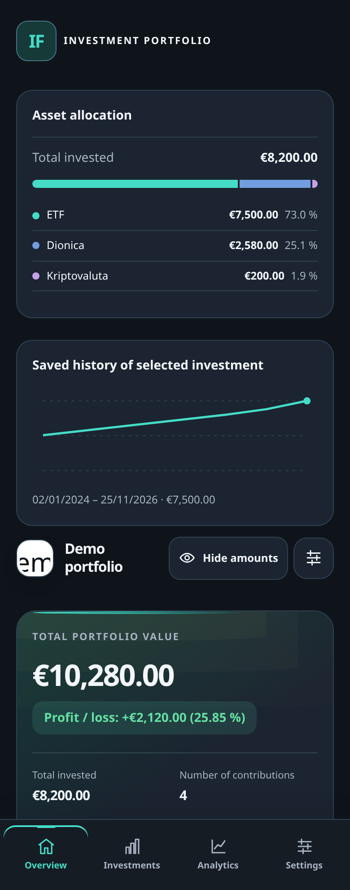

Portfelji na jednom mjestu
ETF-ovi, dionice i kriptovalute. Evidentiraj više ulaganja i prati njihovu vrijednost.
Osobna evidencija ETF-ova, dionica i kriptovaluta. Prati vlastite podatke bez obveznog povezivanja banke ili brokera.

Razvojni prikaz · sintetički podaci · nije javno izdanje
Funkcije dostupne u javnoj beti 1.1.
ETF-ovi, dionice i kriptovalute. Evidentiraj više ulaganja i prati njihovu vrijednost.
Ručni unos kupnji, prodaja i troškova bez obveznog povezivanja brokera.
Prati spremljene vrijednosti i uplate; prikaz nije jamstvo tržišne cijene u stvarnom vremenu.
Informativna evidencija redoslijeda nabave i roka držanja za hrvatsku rezidentnost.
Bez obvezne registracije. Androidova biometrija može zaštititi pristup.
Izvezi JSON datoteku i čuvaj je na sigurnom mjestu koje sam odabereš.
Šest prikaza razvojnog kandidata. Odaberi sliku za uvećanje.
Snimke su generirane iz stvarnih web datoteka kandidata 3.9.24-QA u Chromiumu, sa simuliranim Android mostom i izmišljenim podacima. Nisu snimke završnog Android APK-a.
Besplatna verzija za Android. Evidencija ulaganja, povijest, informativni FIFO i sigurnosne kopije.
Službeno preuzimanje ↗Precision Finance, tamna i svijetla tema, privatni prikaz, devet jezika uključujući makedonski i albanski, prikaz MKD te hrvatska porezna radna podloga.
Lokalna integracija i regresijske provjere završene; Android kompilacija i validacija još predstoje. Privatna Nova nije dostupna za javno preuzimanje.
Objedinjeni FIFO po ISIN-u, zasebne procjene i pregled lotova.
Dividende, inozemni porez i provjere dokumentacije i tečajeva.
Radni PDF, zbirni CSV i detaljni FIFO CSV; Android izvoz još nije potvrđen.
JOPPD i INO-DOH kao radna podloga. Službeni XML i automatsko slanje blokirani.
Procjene nisu službena porezna potvrda. Kripto, prijenosi i nepotpuna evidencija zahtijevaju zaseban pregled.
Sačuvan pregled ranije najavljenih razvojnih regionalnih funkcija. Osim informativnog hrvatskog FIFO-a, ne predstavljaju potvrđene funkcije javne bete 1.1 niti potpuno potvrđene porezne obveze.
| Područje | Razvojni opseg |
|---|---|
| Hrvatska | FIFO u javnoj beti; napredna radna podloga u QA. |
| Slovenija | Radna procjena prodaje dionica i ETF-ova prije godišnjeg prebijanja. |
| Srbija | Dokumentirana prodaja dionica s provjerenim RSD iznosima. |
| Crna Gora | FIFO procjena državnog poreza, bez općinskog prireza. |
| Sjeverna Makedonija | Dokumentirani dio prodaje uz ručni MKD unos. |
| Kosovo | Procjena dodatnog godišnjeg poreza na prodaju dionica. |
| Federacija BiH | Radna procjena prodaje poslovnog udjela u d.o.o. |
| Republika Srpska | Domaća prodaja dionica uz ponderiranu nabavnu vrijednost. |
| Brčko distrikt | Informacija o izuzeću obuhvaćenih instrumenata. |
Ranije najavljeni prošireni izbor rezidentnosti (EU-27 i druga područja) i opći CSV izvoz ostaju razvojni opseg.
Interaktivni grafikon s izmišljenim vrijednostima. Nije povezan s aplikacijom niti sa stvarnim tržišnim podacima.
Aplikacija čuva osobnu evidenciju lokalno. Opcionalni tržišni podaci mogu zahtijevati vanjske usluge. Vizualno skrivanje iznosa nije zamjena za zaključavanje ili enkripciju.
Pročitaj politiku privatnosti ↗Preuzmi Android APK s itch.io.
Ručno evidentiraj ulaganja.
Redovito izvozi sigurnosnu kopiju.
Javna beta 1.1 je besplatna, bez pretplate i oglasa. Budući uvjeti mogu se promijeniti.
Ne. Precision Finance prikazan ovdje je razvojni kandidat 3.9.24-QA. Javna beta 1.1 zadržava prethodni izgled.
Ne. Radna podloga JOPPD i INO-DOH nije službeni obrazac. XML i automatsko slanje su blokirani.
Prema uputama izdavača, beta 1.1 instalira se preko 1.0 bez uklanjanja. Prije nadogradnje napravi sigurnosnu kopiju.
Ne nužno. Ručni unosi i vanjski tržišni podaci mogu biti nepotpuni ili zastarjeli; provjeri bitne iznose neovisno.
Besplatna javna beta za Android. Preuzimanje i povratne informacije na službenoj itch.io stranici.
Otvori itch.io ↗Ranije objavljen kontrolni zbroj izdavača; nije ponovno verificiran u ovoj fazi.
b95a261fd3fe819ebe8de82c548446318beeb6fcc648bb1c538fdc2fd1806ca1Podudaranje zbroja potvrđuje istovjetnost datoteke, ne odsutnost ranjivosti.